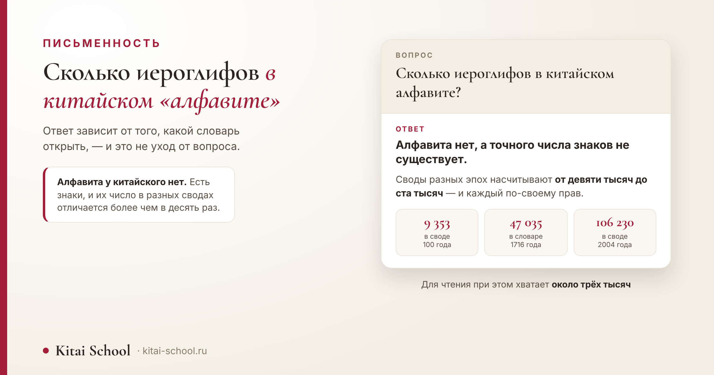
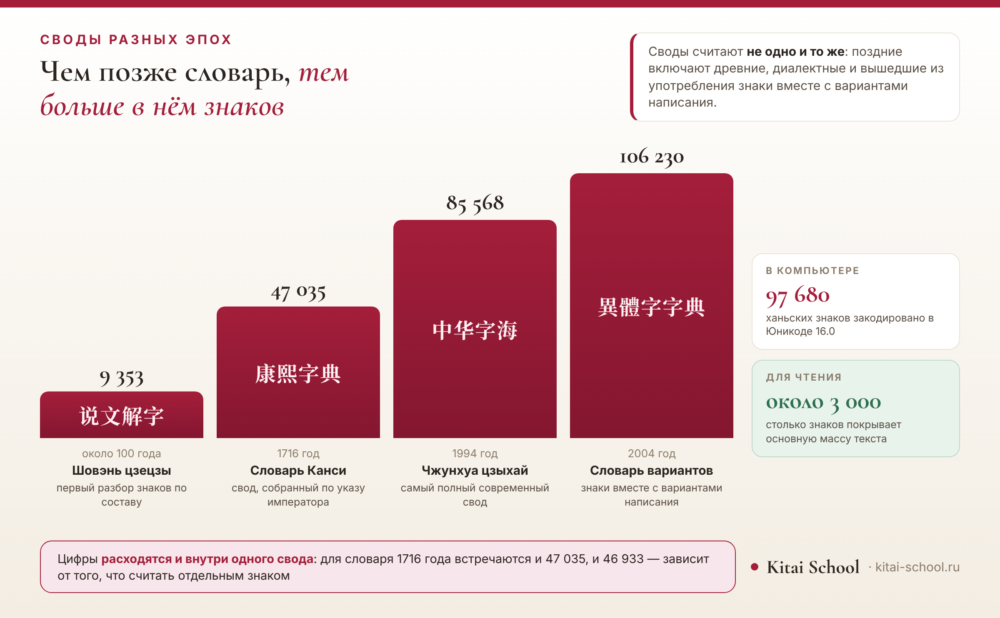

Письменность
Сколько иероглифов в китайском «алфавите»: сколько знаков насчитали словари и почему точного числа нет


В поиске на этот вопрос отвечают цифрами от пятидесяти тысяч до ста, и обычно без объяснений, откуда они взялись. Объяснение есть, и оно интереснее самой цифры: число знаков зависит от того, какой свод открыть и что в нём считать отдельным знаком. Соберём цифры по эпохам, посмотрим, сколько знаков умещается в компьютере, и честно скажем, сколько из них живых.
Алфавита у китайского нет — есть знаки. Точного числа тоже нет: в словаре около 100 года — 9 353 знака, в словаре 1716 года — около 47 тысяч, в самом полном современном своде — 85 568, а с вариантами написания — свыше 106 тысяч. В Юникоде закодировано около 98 тысяч. Для чтения хватает около трёх тысяч.
Короткий ответ: точного числа нет
Начну с того, что выглядит как уход от вопроса, но им не является.
Ни одна цифра здесь не будет окончательной. И дело не в том, что знаки плохо посчитали, а в том, что считать их можно по-разному, и каждый способ даёт свой результат.
Если нужен один короткий ответ, он такой: знаков десятки тысяч, а в самых полных сводах — больше ста тысяч. Всё остальное в этой статье — объяснение, почему этих цифр несколько и какая из них для чего годится.
Разброс не маленький: между самым ранним сводом и самым поздним разница более чем в десять раз. При этом оба числа верны — просто отвечают на разные вопросы.
Откуда тогда берутся «пятьдесят тысяч» и «восемьдесят тысяч», которые попадаются в сети. Это не выдумка: каждая такая цифра взята из конкретного свода, просто без указания, из какого именно. Стоит добавить название словаря — и спор о «правильном» числе исчезает.
От чего зависит результат, можно свести к трём вопросам. Первый: считать ли варианты написания одного знака отдельными знаками. Второй: включать ли вышедшие из употребления — те, что встречаются только в древних текстах. Третий: брать ли диалектные, которые за пределами своей местности не используются.
Ответьте на эти три вопроса «нет» — получите несколько тысяч. Ответьте «да» — получите шестизначное число. Оба подсчёта честные, и в обоих посчитано ровно то, что заявлено.
Поэтому правильный ответ состоит из двух частей. Сколько существует — десятки тысяч, и точнее сказать нельзя. Сколько живых — несколько тысяч, и вот эта цифра устойчива.
Слово «алфавит» здесь не работает
Короткая остановка на самом слове, потому что оно стоит в вопросе.
Алфавит — это набор букв, каждая из которых передаёт звук. Китайская письменность устроена иначе: знак записывает слог вместе со значением, и набора «букв» в ней нет.
Отсюда и невозможность посчитать знаки, как считают буквы. Букв в алфавите всегда ровно столько, сколько решено: их список закрыт. Список иероглифов открыт, и именно поэтому он у каждого свода свой.
Есть и вторая причина, по которой счёт знаков не похож на счёт букв. Знак может выйти из употребления, но не исчезнуть: он остаётся в старых текстах и в словарях, и составитель нового свода решает сам, включать его или нет. Буква так не устаревает — её либо убирают из алфавита решением, либо она остаётся.
Подробный разбор того, из чего состоит письменность и почему пиньинь не алфавит, у нас в двух отдельных статьях: в Китае буквы или иероглифы и какие буквы в китайском языке. Здесь я на этом не останавливаюсь — дальше только про числа.
Сколько знаков насчитывали словари
Теперь цифры по эпохам — от первого свода до современных.
Смотреть их стоит именно подряд: по одной цифре спорить бессмысленно, а в ряду видно само движение — и то, что рост числа знаков не означает усложнения языка.

| Свод | Название | Когда | Знаков | Что это |
|---|---|---|---|---|
| 说文解字 | Шовэнь цзецзы | около 100 года | 9 353 | первый разбор знаков по составу |
| 康熙字典 | Словарь Канси | 1716 год | 47 035 | свод, собранный по указу императора |
| 中华字海 | Чжунхуа цзыхай | 1994 год | 85 568 | самый полный современный свод |
| 異體字字典 | Словарь вариантов | 2004 год | 106 230 | знаки вместе с вариантами написания |
Первая строка — самый ранний полный разбор знаков. Девять с лишним тысяч знаков для начала нашей эры — цифра огромная, и она показывает, что письменность к тому моменту уже сложилась.
Дальше — полтора тысячелетия, за которые число выросло впятеро. Словарь 1716 года собирали по указу императора, и он надолго стал главным сводом: на него ссылались и по нему проверяли написание.
Сколько из них живые
А теперь единственная цифра из этой статьи, которая нужна изучающему язык.
Для чтения хватает около трёх тысяч знаков. Этого достаточно, чтобы читать обычные тексты, и разрыв с сотней тысяч из таблицы выше впечатляет сильнее любых объяснений.
Подробный разбор — сколько знаков в госстандарте, сколько требуется на экзаменах и сколько учат в китайской школе — у нас разнесён по отдельным статьям: интересные факты о китайском языке и как китайцы учат свой язык. Повторять их таблицы здесь я не стану.
Ученик на первом занятии спросил, сколько всего иероглифов. Я ответила честно: десятки тысяч. И по лицу стало понятно, что отвечать так не стоило.
Он посчитал, что язык ему не по силам: учить такое количество знаков за жизнь невозможно, а значит, и начинать незачем.
Сравнение нашлось быстро. В словаре русского языка сотни тысяч слов. Никто из нас их не учил и даже не видел большую часть — но читать это не мешает.
Потом мы посчитали, сколько знаков он узнаёт после двух месяцев занятий. Вышло заметно больше, чем он думал: он просто никогда их не пересчитывал.
С тех пор на этот вопрос я отвечаю иначе: сначала говорю, сколько нужно, и только потом — сколько существует. Второе число отвечает совсем на другой вопрос.
Эта история про то, как большое число мешает начать. Оно и правда большое — просто отвечает не на тот вопрос, который задаёт человек, решающий, браться ли за язык.
Почему цифры расходятся даже внутри одного свода
Вернёмся к таблице сводов — и к тому, что в ней самое любопытное. Посмотрите на один и тот же словарь в разных источниках.
| Свод | Одно число | Другое число |
|---|---|---|
| 说文解字 | 9 353 | 9 516 |
| 康熙字典 | 47 035 | 46 933 |
| 異體字字典 | 106 230 | 106 330 |
Последняя строка — не рекорд, а другой способ счёта. Свыше ста тысяч получается, когда к знакам прибавляют варианты написания: разные начертания одного и того же знака посчитаны отдельно.
Между ним и современными сводами есть ещё один: 中华大字典 (Чжунхуа да цзыдянь) 1915 года, более 48 000 знаков. Я привожу его отдельной строкой, чтобы было видно: рост шёл не скачком, а постепенно.
Разница здесь не в небрежности. Она в том, что считать отдельной единицей: сам знак, его вариант написания, повторную запись того же знака в другом разделе.
Для раннего свода, например, составитель назвал одно число в собственном послесловии, а при позднейшем пересчёте по изданию получается другое. Оба числа честные — они про разное.
Отсюда правило, полезное не только для китайского: встретив точную цифру, спросите, что именно в неё включили. В этой теме ответ на такой вопрос меняет результат на тысячи.
Сколько знаков в компьютере
Есть ещё один способ посчитать знаки, и он самый новый.
В Юникоде — единой таблице символов для всех языков — отведено около 97 680 позиций под ханьские знаки. Это те иероглифы, которые можно набрать и отобразить на любом современном устройстве.
Цифра и тут не одна: в одной публикации стандарта называют 97 680, в базе данных по тем же знакам — 97 058. Разница — в том, что считать: некоторые позиции отведены под совместимость со старыми кодировками.
Важно понимать, что это не ответ на вопрос «сколько знаков существует». Кодировка включает далеко не всё: редкие знаки из диалектов и старых имён добавляют постепенно, и часть их до сих пор ждёт своей очереди.
Зато эта цифра отвечает на другой, вполне практический вопрос: сколько знаков вы в принципе можете встретить в электронном тексте. И она уже сопоставима с объёмом самых полных словарей.
Почему число всё ещё растёт
Казалось бы, письменность давно сложилась — откуда новые знаки?
Первый источник — наука. Для новых понятий иногда создают новые знаки: так в своё время появились иероглифы для химических элементов, собранные по понятному принципу из ключа и фонетической части.
Второй — имена. В личных именах встречаются редкие и старые написания, и каждый такой знак нужно поддерживать в шрифтах и базах, иначе человека невозможно записать в документе.
Стоит оговориться: новые знаки — явление редкое, и счёт тут идёт на единицы, а не на сотни. Для сравнения: основная масса того, что добавляется в словари, — это давно существующие знаки, которые просто раньше в них не попадали.
Третий — диалекты. Местные слова записывают знаками, которых нет в общем употреблении, и часть из них постепенно попадает в словари и кодировки.
При этом в обратную сторону процесс тоже идёт: знаки выходят из употребления и остаются только в сводах. Число в словаре растёт, а число живых знаков держится примерно на одном уровне — и это, пожалуй, главное, что стоит вынести из всей арифметики.
Чего в статье нет намеренно
Перечислю прямо, чтобы не искали.
- Нет разбора, как устроен иероглиф. Ключи, фонетики и состав знака — отдельная тема: значение ключей в китайских иероглифах.
- Нет таблицы «сколько нужно знать». Она у нас есть, но в другой статье, и дублировать её незачем.
- Нет школьных нормативов и уровней экзамена — по тем же причинам.
- Нет разбора пиньиня и чжуиня — это соседние страницы.
- Нет истории появления письменности и споров о первых знаках: об этом здесь — кто придумал китайские иероглифы.
- Нет одного «правильного» числа. Я не стала выбирать из шести цифр одну, чтобы статья выглядела увереннее.
И общий вывод, ради которого всё это считалось. Вопрос «сколько иероглифов» звучит как вопрос о количестве, а на деле это вопрос о границах: где заканчивается знак и начинается его вариант, считать ли мёртвые знаки, включать ли диалектные. Как ответишь на эти три вопроса — такое число и получишь.
Для изучающего язык из этого следует простое. Не ориентируйтесь на большие числа вовсе: они описывают письменность как свод, а не как рабочий инструмент. Инструмент — это несколько тысяч знаков, и они набираются чтением, а не подсчётом.
Иероглифы перестают пугать, когда появляется система: от ключей к словам и к чтению — онлайн-курсы китайского. Оставить заявку или написать в Telegram.
Частые вопросы (FAQ)
Сколько иероглифов в китайском алфавите?
Алфавита у китайского языка нет — и это не придирка к слову: письменность устроена принципиально иначе, знак передаёт не звук, а значение со слогом. Если же вопрос в том, сколько всего существует иероглифов, точного числа тоже не существует: своды разных эпох насчитывают от девяти тысяч знаков до ста тысяч с лишним.
Сколько всего иероглифов существует?
Зависит от того, какой свод открыть. В словаре начала нашей эры 说文解字 — 9 353 знака, в словаре 康熙字典 1716 года — около 47 тысяч, в своде 中华字海 1994 года — 85 568, а в тайваньском словаре вариантов 2004 года — свыше 106 тысяч, но там знаки посчитаны вместе с вариантами написания.
Сколько иероглифов нужно знать, чтобы читать?
Несравнимо меньше: около трёх тысяч знаков покрывают основную массу обычного текста. Подробный разбор с цифрами по уровням и спискам у нас в отдельной статье об интересных фактах о языке — здесь я эту таблицу не повторяю.
Почему у разных словарей разные цифры?
Своды собраны по разным правилам. Во-первых, в них включён разный материал: поздние берут и древние, и диалектные, и вышедшие из употребления знаки. Во-вторых, расходится сам счёт: варианты написания одного знака можно считать за один знак, а можно за несколько. Для словаря 1716 года, например, встречаются и 47 035, и 46 933.
Пиньинь — это алфавит?
Пиньинь — это запись звучания латинскими буквами, а не письменность: тексты им не пишут, он нужен для чтения вслух, словарей и ввода с клавиатуры. Подробный разбор, включая названия букв и другие системы записи, у нас на отдельной странице.
Появляются ли новые иероглифы?
Да, хотя и редко. Знаки добавляют для научных терминов — так в своё время появились названия химических элементов, — а в именах людей иногда встречаются редкие и старые написания, которые приходится отдельно поддерживать в компьютерных шрифтах.
Пусть знаков будет ровно столько, сколько вам нужно! 加油！
Источники
- Числа по сводам сверены по нескольким независимым публикациям: 说文解字 — 9 353 знака по счёту самого составителя, 康熙字典 — 47 035, 中华字海 — 85 568, тайваньский словарь вариантов 2004 года — 106 230 знаков вместе с вариантами написания.
- Расхождения названы числами, а не словом «примерно»: для 说文解字 встречается и 9 516, для 康熙字典 — 46 933, для словаря вариантов — 106 330. Это и есть содержательная часть ответа.
- Свод 中华大字典 1915 года приведён как промежуточная ступень: более 48 000 знаков.
- Юникод: в тексте стандарта версии 16.0 указано 97 680 ханьских знаков, в базе Unihan по тем же знакам — 97 058.
- Число 汉语大字典 не приводится: подтвердить его ни в одном доступном источнике я не смогла, а называть наугад не стану.
- «Около трёх тысяч для чтения» — по нашей же статье об интересных фактах о языке, где эта тема разобрана подробно с таблицей.
- Ряд словарей задан в сборке страницы один раз и оттуда попадает и в таблицу, и на картинку. Сборка не пройдёт, если годы или числа перестанут расти согласованно.
- Устройство письменности, пиньинь и чжуинь в статье не разбираются — по каждой теме у нас есть своя страница, и ссылки на них стоят в тексте.
- Случай с учеником, испугавшимся большого числа, — из занятий Kitai School; имени и города не называю.